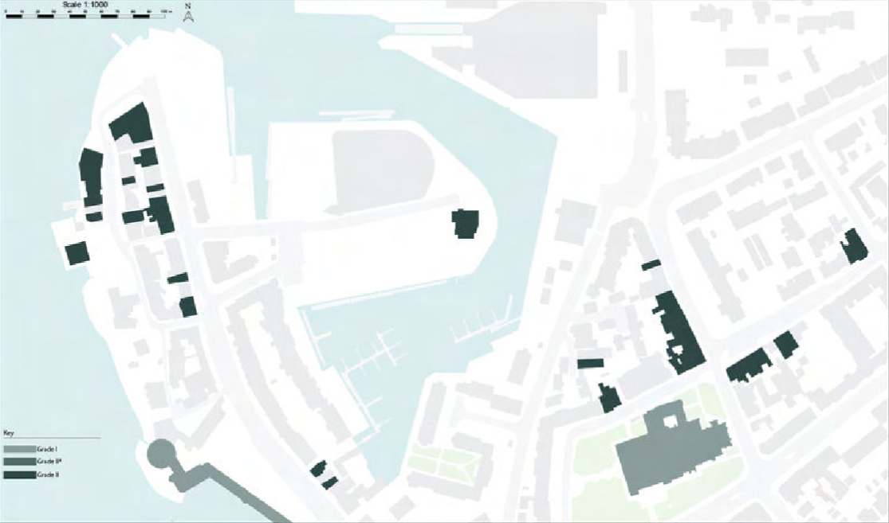
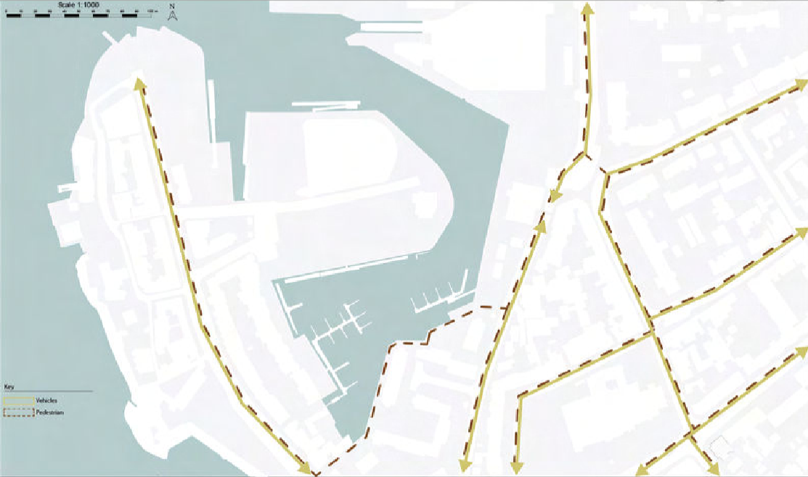
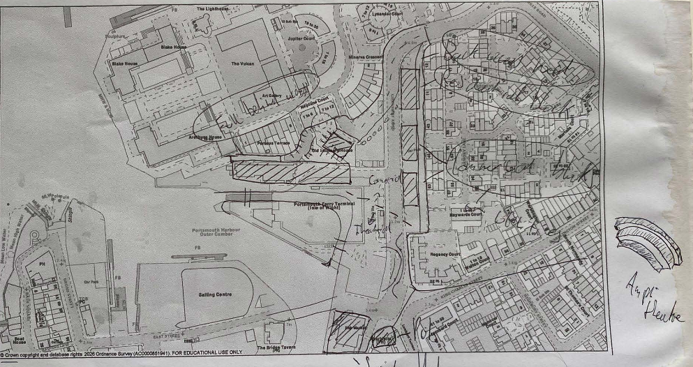
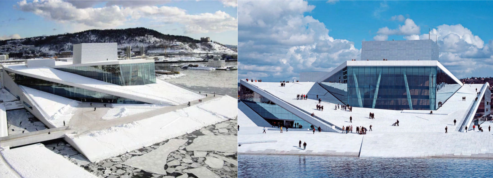
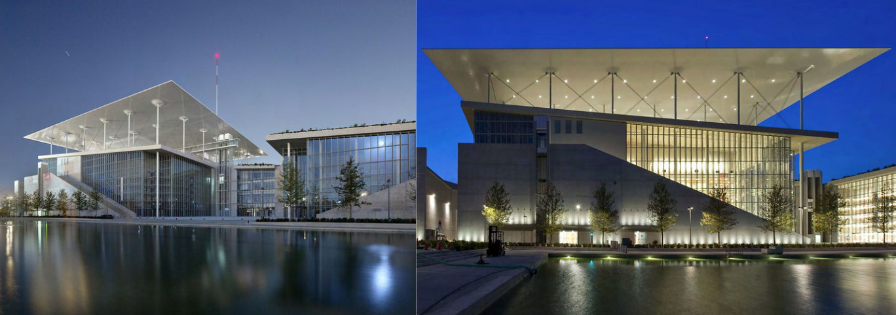

Major Project — Phase 1 · Team Masterplan · March 2026
Major Project — Phase 1 · Team Masterplan · March 2026
Overview
Phase 1 of the major project, completed as a group exercise. Conrad interpreted the brief, organised the team's workflow, and guided key design decisions across a masterplan for Old Portsmouth — the historic southern tip of Portsea Island, where the city's naval heritage meets a largely inaccessible waterfront.
The brief was to propose how this stretch of waterfront could be opened up for public use. The team's approach centred on a strategy of selective removal: identifying existing structures that occupied prime waterfront land without contributing public value, and proposing their replacement with a programme of publicly accessible uses.
The SubseaCraft office building and the Wightlink ferry terminal were identified for removal. In their place, the masterplan proposed a research centre, education facility, gallery, pavilion, market space, social hub, and residential zone — a sequence of uses that would generate activity across the day and evening rather than serving a single purpose.
The masterplan directly shaped the Phase 2 solo building. The site for the Berm/Meridian Building — and its programme of marine research and public use — grew directly out of the Phase 1 analysis and the gap the team identified at The Hard.
Masterplan Strategy
The masterplan's central argument was that Old Portsmouth's waterfront had been colonised by uses that turned their back on the public: a ferry terminal organised for vehicle throughput, an office building claiming a prominent waterfront corner. Removing these created the land necessary to build something the city could use.
Proposed uses were selected to run across the full day — market and pavilion activity during the day, restaurant and social hub in the evening, residential providing presence at night. The waterfront needed to feel inhabited rather than transitional.
The team's analysis boards covered site access and movement, flood risk, heritage designations, views, transport connections, and existing building condition. These directly informed which removals were viable and which sites should be built on first.
Analysis








Part of a Continuous Project
The solo Phase 2 building grew directly from this masterplan. The site, the programme, and the challenge of earning a place on a historically sensitive waterfront all came from the Phase 1 analysis.
View the Meridian Building →